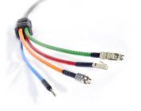
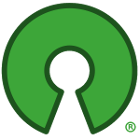

<!-- Carousel-->
<div class="container">
	<div id="myCarousel" class="carousel slide" data-ride="carousel">
		<!-- Indicators -->
		<ol class="carousel-indicators">
			<li data-target="#myCarousel" data-slide-to="0" class="active"></li>
			<li data-target="#myCarousel" data-slide-to="1"></li>
			<li data-target="#myCarousel" data-slide-to="2"></li>
		</ol>
		<div class="carousel-inner">
			<div class="item active">
				
				<!--  <div class="container"> -->
				<div class="carousel-caption">
					<h1>Use it!</h1>
					<p>Install, configure and experiment with your "smartified"
						home.</p>
					<p>
						<a class="btn btn-lg btn-primary" href="/useit.html" role="button">Learn
							how</a>
					</p>
					<!--</div> -->
				</div>
			</div>
			<div class="item">
				
				<!--<div class="container"> -->
				<div class="carousel-caption">
					<h1>Integrate it!</h1>
					<p>Integrate multiple networks into your enterprise
						infrastructure. Build your own monitoring and control platform.
						Create new products based on The Dog Gateway.</p>
					<p>
						<a class="btn btn-lg btn-default disabled" href="#" role="button">Coming
							soon...</a>
					</p>
				</div>
				<!--</div> -->
			</div>
			<div class="item">
				
				<!--<div class="container"> -->
				<div class="carousel-caption">
					<h1>Develop!</h1>
					<p>Design your own application or web interface. Add new
						functionalities and integrate new technologies. Build your own
						modules.</p>
					<p>
						<a class="btn btn-lg btn-primary" href="/develop.html"
							role="button">Developer Resources</a> <a
							class="btn btn-lg btn-primary" href="/build-on-it.html"
							role="button">Check the RESTful and WebSocket APIs</a>
					</p>
				</div>
				<!--</div> -->
			</div>
		</div>
		<a class="left carousel-control" href="#myCarousel" data-slide="prev"><span
			class="glyphicon glyphicon-chevron-left"></span></a> <a
			class="right carousel-control" href="#myCarousel" data-slide="next"><span
			class="glyphicon glyphicon-chevron-right"></span></a>
	</div>
	<!-- /.carousel -->

	<div class="container marketing">

		<!-- Three columns of text below the carousel -->
		<div class="row">
			<div class="col-lg-4 col-md-4 col-sm-6">
				
				<h2>Uniform</h2>
				<p>
					OWL-based device abstraction. Control Logic defined <strong>once</strong>
					and deployed <strong>everywhere</strong>, hiding all network
					issues. Easy application development using its <a
						href="/rest-api.html">RestAPI</a> and <a
						href="/websocket-api.html">WebSocketAPI</a>. Inter-operation of
					technologies, devices, and automation networks.
				</p>
				<p class="learn-more">
					<a class="btn btn-default" href="#abstraction" role="button">Learn
						More &raquo;</a>
				</p>
			</div>
			<!-- /.col-lg-4 -->
			<div class="col-lg-4 col-md-4 col-sm-6">
				
				<h2>Multi-protocol</h2>
				<p>Virtually support any home, building and automation protocol.
					Wide range of networks, including bus technologies, wireless
					systems and typical industrial automation solutions: KNX, BTicino
					MyHome, Echelon, Z-Wave, ZigBee, EnOcean*, Modbus, Philips Hue.</p>
				<p>* currently under development</p>
				<p class="learn-more">
					<a class="btn btn-default" href="#multiprotocol" role="button">Learn
						More &raquo;</a>
				</p>
			</div>
			<!-- /.col-lg-4 -->
			<div class="col-lg-4 col-md-4 col-sm-6">
				
				<h2>Open Source</h2>
				<p>
					Released under the Apache v2.0 License. Want to contribute? Join us
					on <a href="http://github.com/dog-gateway">GitHub</a>!
				</p>
				<p>
					<!-- <a class="btn btn-default" href="#" role="button">Learn More
						&raquo;</a> -->
				</p>
			</div>
			<!-- /.col-lg-4 -->
		</div>
		<!-- /.row -->


		<!-- START THE FEATURETTES -->


		<div class="row">
			<div class="col-lg-12 col-md-12 col-sm-12">
				<p class="text-primary lead">News</p>
				<hr>
				<ul>
					{% for post in site.posts %} {%if forloop.index0 < 5 %}
					<li>{{ post.date | date: "%-d %B %Y" }} - {{post.title}}, <a
						href="{{post.url}}">more...</a></li> {% endif %} {% endfor %}
				</ul>
				<hr>
			</div>
		</div>
		<div class="row featurette">
			<div class="col-md-7">
				<a id="abstraction"></a>
				<h2 class="featurette-heading">
					OWL-based <span class="text-muted">device abstraction.</span>
				</h2>
				<p class="lead">
					Representing devices, appliances, furniture and home environments
					in a technology independent, yet actionable manner. Control Logic
					defined <strong>once</strong> and deployed <strong>everywhere</strong>,
					hiding all network issues.
				</p>
			</div>
			<div class="col-md-5">
			<iframe  class="featurette" src="//www.slideshare.net/slideshow/embed_code/key/K6rO2CGHtnpujI&startSlide=7" width="427" height="356" frameborder="0" marginwidth="0" marginheight="0" scrolling="no" style="border:1px solid #CCC; border-width:1px; margin-bottom:5px; max-width: 100%;" allowfullscreen> </iframe> </div>
			</div>
		</div>
		<div class="row featurette">
			<div class="col-md-5">

				<iframe  class="featurette" src="//www.slideshare.net/slideshow/embed_code/key/K6rO2CGHtnpujI" width="427" height="356" frameborder="0" marginwidth="0" marginheight="0" scrolling="no" style="border:1px solid #CCC; border-width:1px; margin-bottom:5px; max-width: 100%;" allowfullscreen> </iframe>  </div>
			</div>
			<div class="col-md-7">
				<a id="multiprotocol"></a>
				<h2 class="featurette-heading">
					Multi-protocol <span class="text-muted">operation.</span>
				</h2>
				<p class="lead">Virtually support any home, building and
					automation protocol. Wide range of networks, including bus
					technologies, wireless systems and typical industrial automation
					solutions.</p>
			</div>
		</div>

		{% include technologies.html %}
	</div>
</div>